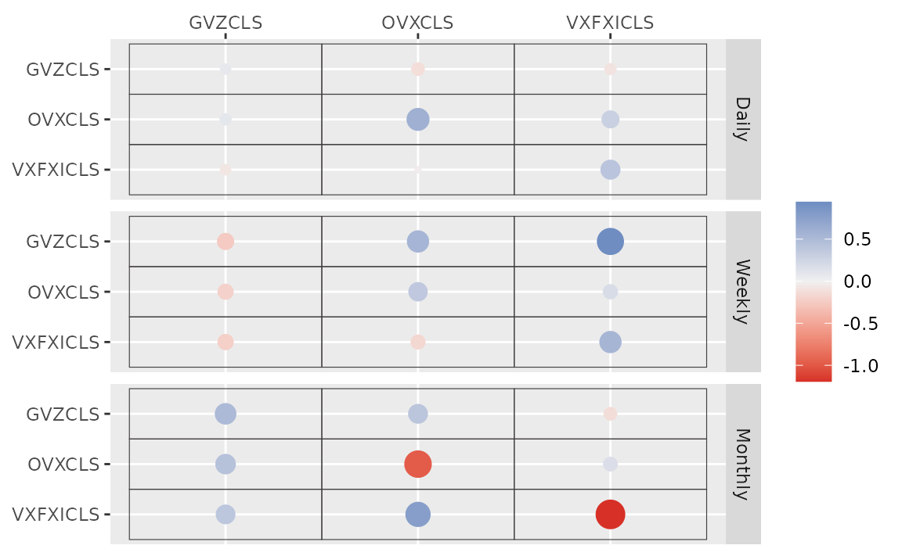

etf <- etf_vix[1:55, 1:3]
# Split-------------------------------
h <- 5
etf_eval <- divide_ts(etf, h)
etf_train <- etf_eval$train
etf_test <- etf_eval$testBayesian VAR and VHAR
var_bayes() and vhar_bayes() fit BVAR and
BVHAR each with various priors.
-
y: Multivariate time series data. It should be data frame or matrix, which means that every column is numeric. Each column indicates variable, i.e. it sould be wide format. -
porhar: VAR lag, or order of VHAR -
num_chains: Number of chains- If OpenMP is enabled, parallel loop will be run.
-
num_iter: Total number of iterations -
num_burn: Number of burn-in -
thinning: Thinning -
bayes_spec: Output ofset_ssvs()- Minneosta prior
- BVAR:
set_bvar() - BVHAR:
set_bvhar()andset_weight_bvhar() - Can induce prior on
using
lambda = set_lambda()
- BVAR:
- SSVS prior:
set_ssvs() - Horseshoe prior:
set_horseshoe() - NG prior:
set_ng() - DL prior:
set_dl()
- Minneosta prior
-
cov_spec: Covariance prior specification. Useset_ldlt()for homoskedastic model. -
include_mean = TRUE: By default, you include the constant term in the model. -
minnesota = c("no", "short", "longrun"): Minnesota-type shrinkage. -
verbose = FALSE: Progress bar -
num_thread: Number of thread for OpenMP- Used in parallel multi-chain loop
- This option is valid only when OpenMP in user’s machine.
Stochastic Search Variable Selection (SSVS) Prior
(fit_ssvs <- vhar_bayes(etf_train, num_chains = 1, num_iter = 20, bayes_spec = set_ssvs(), cov_spec = set_ldlt(), include_mean = FALSE, minnesota = "longrun"))
#> Call:
#> vhar_bayes(y = etf_train, num_chains = 1, num_iter = 20, bayes_spec = set_ssvs(),
#> cov_spec = set_ldlt(), include_mean = FALSE, minnesota = "longrun")
#>
#> BVHAR with SSVS prior
#> Fitted by Gibbs sampling
#> Total number of iteration: 20
#> Number of burn-in: 10
#> ====================================================
#>
#> Parameter Record:
#> # A draws_df: 10 iterations, 1 chains, and 90 variables
#> phi[1] phi[2] phi[3] phi[4] phi[5] phi[6] phi[7] phi[8]
#> 1 0.7544 0.05306 -0.422 0.2122 -0.1115 0.3722 -0.6377 -0.0910
#> 2 0.5343 -0.31164 -0.341 -0.1384 0.5379 0.0970 0.8319 0.3572
#> 3 0.2674 0.00545 -0.380 -0.1675 -0.3368 -0.1894 0.4433 0.2873
#> 4 0.1726 -0.05570 -0.289 0.0497 -0.2140 -0.2096 0.5975 0.0188
#> 5 0.1812 0.19128 -0.123 -0.0383 -0.3786 -0.3001 -0.0611 0.1636
#> 6 0.0834 -0.01712 -0.137 -0.1036 -0.0992 -0.3437 0.3119 -0.2324
#> 7 -0.0264 0.26514 -0.209 0.0575 -0.4691 -0.5570 0.1537 -0.1859
#> 8 0.1029 -0.05406 -0.290 0.1131 -0.0365 0.0768 0.0877 0.2493
#> 9 -0.0703 0.11100 -0.135 0.1809 -0.3407 -0.0436 0.1127 0.3580
#> 10 -0.0623 0.01075 -0.233 0.2835 -0.2930 0.1719 0.3105 0.3079
#> # ... with 82 more variables
#> # ... hidden reserved variables {'.chain', '.iteration', '.draw'}autoplot() for the fit (bvharsp object)
provides coefficients heatmap. There is type argument, and
the default type = "coef" draws the heatmap.
autoplot(fit_ssvs)
Horseshoe Prior
bayes_spec is the initial specification by
set_horseshoe(). Others are the same.
(fit_hs <- vhar_bayes(etf_train, num_chains = 2, num_iter = 20, bayes_spec = set_horseshoe(), cov_spec = set_ldlt(), include_mean = FALSE, minnesota = "longrun"))
#> Call:
#> vhar_bayes(y = etf_train, num_chains = 2, num_iter = 20, bayes_spec = set_horseshoe(),
#> cov_spec = set_ldlt(), include_mean = FALSE, minnesota = "longrun")
#>
#> BVHAR with Horseshoe prior
#> Fitted by Gibbs sampling
#> Number of chains: 2
#> Total number of iteration: 20
#> Number of burn-in: 10
#> ====================================================
#>
#> Parameter Record:
#> # A draws_df: 10 iterations, 2 chains, and 124 variables
#> phi[1] phi[2] phi[3] phi[4] phi[5] phi[6] phi[7] phi[8]
#> 1 -0.0283 0.0635 -0.02154 0.413 -0.27729 -0.0408 -0.7402 1.2782
#> 2 -0.6391 -0.0624 -0.00830 0.446 -1.46799 -0.1058 -0.8185 1.0205
#> 3 0.2872 -0.1707 0.00537 -2.490 1.22842 0.1202 -1.0869 1.2682
#> 4 0.0626 -0.7457 -0.00972 -0.109 0.28749 -0.0923 -1.2879 0.4119
#> 5 0.0251 -0.3702 -0.00861 -1.594 0.83722 -0.5771 -0.6201 -0.2501
#> 6 -0.5148 -0.2663 0.04096 -0.106 -0.50536 -0.0396 -0.0217 0.2610
#> 7 0.6274 0.1879 0.04820 -1.182 0.00175 -0.4716 0.9934 -0.0872
#> 8 0.8702 -1.1407 0.07683 -0.568 0.23919 -1.4472 -0.1027 -1.2762
#> 9 0.8609 -0.3849 0.28844 -0.495 -0.08515 0.0516 2.4216 0.1219
#> 10 0.3839 -0.2417 0.16931 0.851 0.07666 0.4424 0.1283 -0.1985
#> # ... with 10 more draws, and 116 more variables
#> # ... hidden reserved variables {'.chain', '.iteration', '.draw'}
autoplot(fit_hs)
Minnesota Prior
(fit_mn <- vhar_bayes(etf_train, num_chains = 2, num_iter = 20, bayes_spec = set_bvhar(lambda = set_lambda()), cov_spec = set_ldlt(), include_mean = FALSE, minnesota = "longrun"))
#> Call:
#> vhar_bayes(y = etf_train, num_chains = 2, num_iter = 20, bayes_spec = set_bvhar(lambda = set_lambda()),
#> cov_spec = set_ldlt(), include_mean = FALSE, minnesota = "longrun")
#>
#> BVHAR with MN_Hierarchical prior
#> Fitted by Gibbs sampling
#> Number of chains: 2
#> Total number of iteration: 20
#> Number of burn-in: 10
#> ====================================================
#>
#> Parameter Record:
#> # A draws_df: 10 iterations, 2 chains, and 63 variables
#> phi[1] phi[2] phi[3] phi[4] phi[5] phi[6] phi[7] phi[8]
#> 1 0.0655 -0.1728 0.5099 0.1500 0.0307 0.584 0.16573 -0.1910
#> 2 0.4975 -0.2661 0.3123 0.6970 -0.2971 0.858 0.37941 -0.2074
#> 3 0.2502 -0.1968 -0.0379 0.2227 -0.0619 0.850 0.08173 0.0294
#> 4 0.1096 -0.0522 -0.1944 0.2703 0.5376 0.884 0.30891 -0.0865
#> 5 0.0977 -0.1501 0.2333 -0.0935 0.1920 1.105 -0.12314 0.0112
#> 6 -0.0391 -0.0474 0.3239 0.0736 0.1586 0.957 0.16802 0.6288
#> 7 0.0878 0.0502 0.1842 0.4464 0.2278 1.131 0.05575 -0.0362
#> 8 0.1730 0.0505 0.3756 0.4342 0.6681 0.816 0.70321 -0.1699
#> 9 0.2936 -0.2706 -0.0922 0.0347 0.3331 0.721 0.29083 -0.0311
#> 10 0.1966 -0.0790 -0.0210 0.4625 0.2511 0.794 -0.00438 -0.0894
#> # ... with 10 more draws, and 55 more variables
#> # ... hidden reserved variables {'.chain', '.iteration', '.draw'}Normal-Gamma prior
(fit_ng <- vhar_bayes(etf_train, num_chains = 2, num_iter = 20, bayes_spec = set_ng(), cov_spec = set_ldlt(), include_mean = FALSE, minnesota = "longrun"))
#> Call:
#> vhar_bayes(y = etf_train, num_chains = 2, num_iter = 20, bayes_spec = set_ng(),
#> cov_spec = set_ldlt(), include_mean = FALSE, minnesota = "longrun")
#>
#> BVHAR with NG prior
#> Fitted by Metropolis-within-Gibbs
#> Number of chains: 2
#> Total number of iteration: 20
#> Number of burn-in: 10
#> ====================================================
#>
#> Parameter Record:
#> # A draws_df: 10 iterations, 2 chains, and 97 variables
#> phi[1] phi[2] phi[3] phi[4] phi[5] phi[6] phi[7]
#> 1 -0.0780 -0.00127 0.00549 0.04353 -0.060442 1.6655 -0.2404
#> 2 0.0490 -0.03717 1.14192 0.11399 -0.044196 1.2800 0.0289
#> 3 -0.0105 -0.01031 0.24064 1.05025 0.149134 1.4929 0.9444
#> 4 0.0340 -0.05940 0.71196 0.00406 0.171767 0.5742 -1.1227
#> 5 0.3288 -0.83730 0.21306 0.67327 -0.009921 0.5230 0.5755
#> 6 0.1290 -0.80410 -0.20962 -0.06972 0.051619 0.1992 1.1013
#> 7 -0.2118 -0.21370 0.61918 2.00123 0.639242 0.5144 1.6293
#> 8 0.1312 -0.47021 0.53789 -0.09165 0.001126 0.3130 0.3831
#> 9 0.9306 -1.05630 -0.00189 0.59304 0.000752 0.0159 0.1164
#> 10 0.0883 -1.34142 -0.34921 -0.09275 -0.024686 -0.2898 1.1223
#> phi[8]
#> 1 0.37387
#> 2 -0.10864
#> 3 0.59090
#> 4 -0.17279
#> 5 0.48771
#> 6 0.10928
#> 7 0.36100
#> 8 -0.05818
#> 9 -0.00364
#> 10 0.15015
#> # ... with 10 more draws, and 89 more variables
#> # ... hidden reserved variables {'.chain', '.iteration', '.draw'}Dirichlet-Laplace prior
(fit_dl <- vhar_bayes(etf_train, num_chains = 2, num_iter = 20, bayes_spec = set_dl(), cov_spec = set_ldlt(), include_mean = FALSE, minnesota = "longrun"))
#> Call:
#> vhar_bayes(y = etf_train, num_chains = 2, num_iter = 20, bayes_spec = set_dl(),
#> cov_spec = set_ldlt(), include_mean = FALSE, minnesota = "longrun")
#>
#> BVHAR with DL prior
#> Fitted by Gibbs sampling
#> Number of chains: 2
#> Total number of iteration: 20
#> Number of burn-in: 10
#> ====================================================
#>
#> Parameter Record:
#> # A draws_df: 10 iterations, 2 chains, and 91 variables
#> phi[1] phi[2] phi[3] phi[4] phi[5] phi[6] phi[7] phi[8]
#> 1 0.0304 -0.1531 0.1566 1.388 0.0927 1.023 0.14123 0.0398
#> 2 0.3484 -0.2231 -0.1729 1.000 0.2022 1.336 -0.00542 0.0127
#> 3 0.0732 -0.3671 -0.0159 1.581 0.2368 1.138 0.36978 -0.2699
#> 4 0.3273 -0.2251 0.2362 0.943 0.2734 1.055 0.05505 -0.0507
#> 5 0.1749 -0.3567 0.2395 0.730 -0.4222 1.044 -0.10084 -0.1596
#> 6 0.2351 -0.2428 -0.5151 0.424 0.4929 0.363 0.07935 -0.3663
#> 7 0.2594 -0.2880 -0.3578 0.374 0.0584 0.784 -0.45592 -0.5388
#> 8 0.0989 -0.0833 -0.0751 -0.311 -0.3134 0.622 0.10327 0.0374
#> 9 -0.2344 0.0857 0.1687 0.980 -0.1275 0.975 0.12368 -0.0228
#> 10 -0.0914 -0.3104 0.4086 0.150 -0.2838 0.471 0.54686 -0.0088
#> # ... with 10 more draws, and 83 more variables
#> # ... hidden reserved variables {'.chain', '.iteration', '.draw'}Bayesian visualization
autoplot() also provides Bayesian visualization.
type = "trace" gives MCMC trace plot.
autoplot(fit_hs, type = "trace", regex_pars = "tau")
type = "dens" draws MCMC density plot. If specifying
additional argument facet_args = list(dir = "v") of
bayesplot, you can see plot as the same format with
coefficient matrix.
autoplot(fit_hs, type = "dens", regex_pars = "kappa", facet_args = list(dir = "v", nrow = nrow(fit_hs$coefficients)))